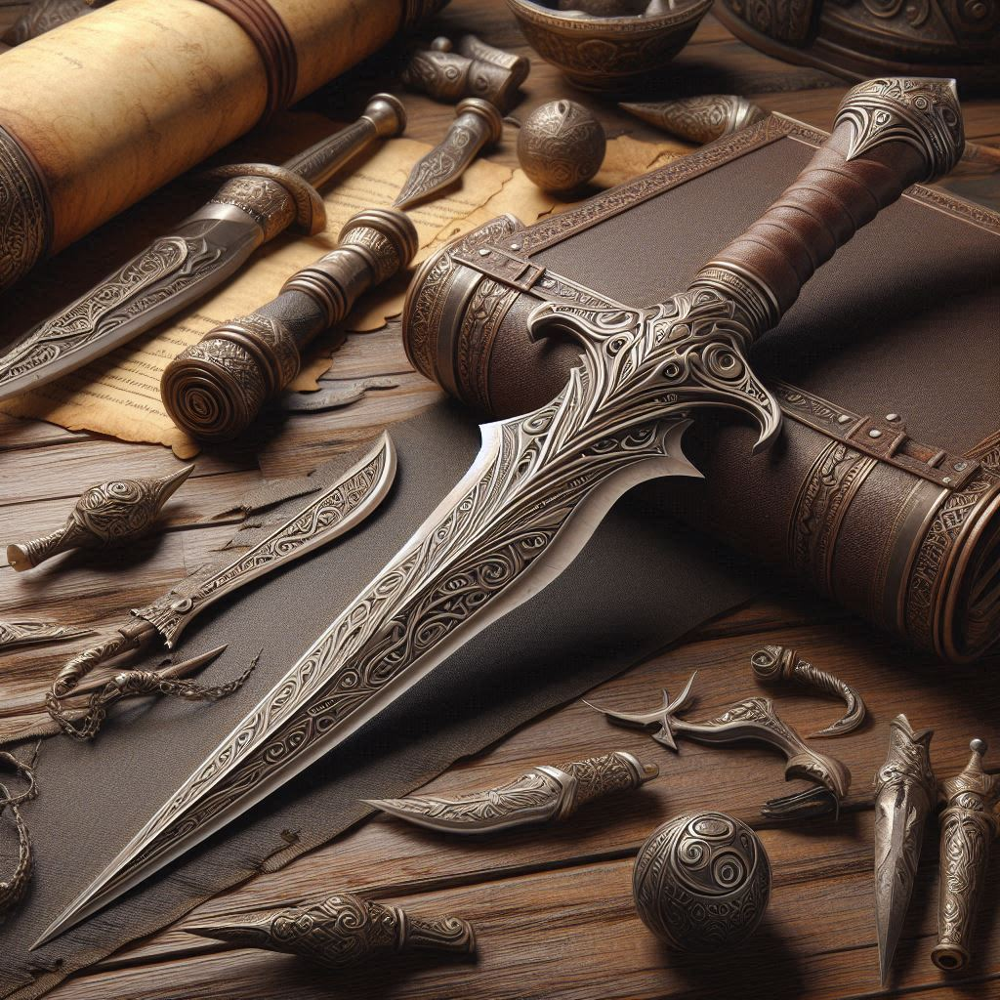
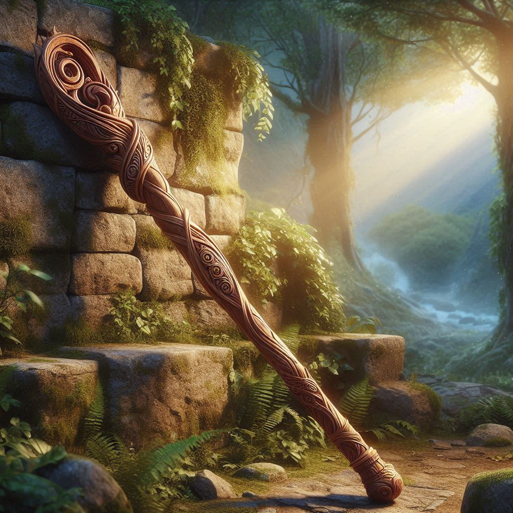

The longsword is a favorite among characters who value strength and durability, such as fighters, paladins, and clerics. Its ability to deliver heavy blows makes it a reliable choice in combat.
The dagger is a weapon often chosen by rogues, spellcasters, and anyone who values having a reliable, backup tool at hand. Are you equipping your character with one.
The Quarterstaff is popular among spellcasters like wizards and monks, who often rely on its simplicity and functionality. It's a great weapon for anyone seeking a balance of defense and offense in combat.